Write, mark up, teach.
Penglide is a notebook app for handwritten notes, PDF annotation and online tutoring. Share your screen and teach with your pen.
For Android and iOS. Best on a tablet, also runs on phones.
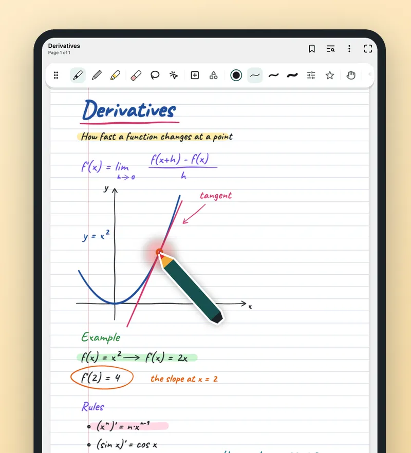
- No account
- No ads, no tracking
- Works offline
- 17 pens and brushes
- Android and iOS
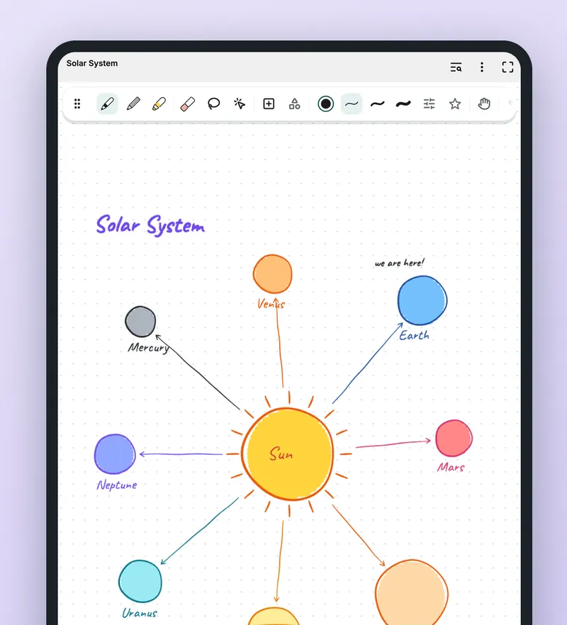
Students see where you point and write
When you teach over screen sharing, students cannot see your hand or your pen. Penglide's teaching pen was made for exactly that.
- A pen-shaped pointerIt appears where your stylus nears the screen and follows it.
- A ring under the tipA soft ring shows while you write, so attention goes to the right place.
- Laser pointerLeaves a short-lived trail where you point and keeps the page clean. You choose how long it stays.
- Lesson timerReady-made lengths or your own.
- Infinite canvas and second screenTeach on endless space like a whiteboard, or show the page on a connected display.
- Study tapeCover an answer, tap to reveal it.
The teaching pen needs an active stylus that the screen can sense before it touches.
Handwritten notes that feel like paper
Colourful diagrams, drawings and formulas at the tip of your pen.
- 17 pens and brushesBallpoint, fountain pen, pencil, highlighter, calligraphy, watercolour and more.
- Pressure-sensitiveMade for active styluses such as the S Pen.
- Edit freelyEraser, lasso select, move, rotate and resize.
- Pages for every useLined, grid, dotted, music and many other templates. Save your own, too.
- More than inkGeometric shapes, layers, text boxes, images and tables.
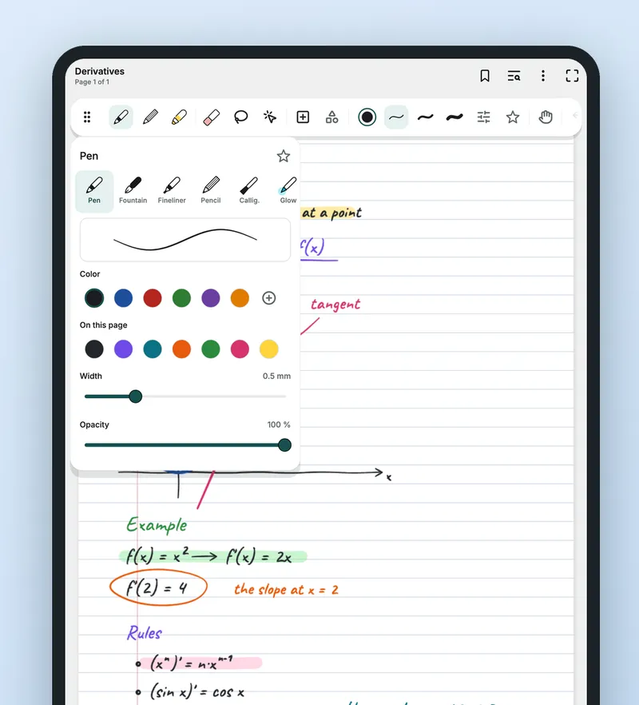
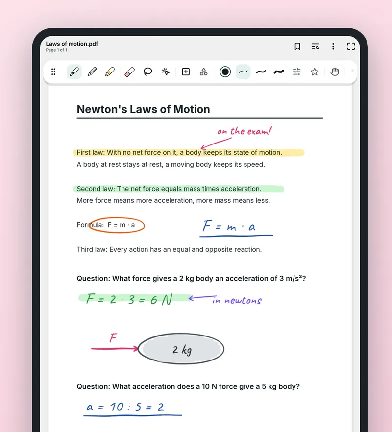
Write on your PDFs
Mark up books, tests and worksheets, then send them back as PDFs.
- Import and writeBring in PDFs and write on books, tests and worksheets.
- Room for your notesExpand the margins to make space.
- Share as PDFExport PDFs that keep their text selectable and send them to students.
All your lessons in one place
Coloured folders, tags and fast search.
- Folders, tags, favourites, trashKeep every class and student where you can find it.
- SearchFinds titles, typed text and PDF content. It does not search inside handwriting.
- Voice notesRecordings play back with your writing.
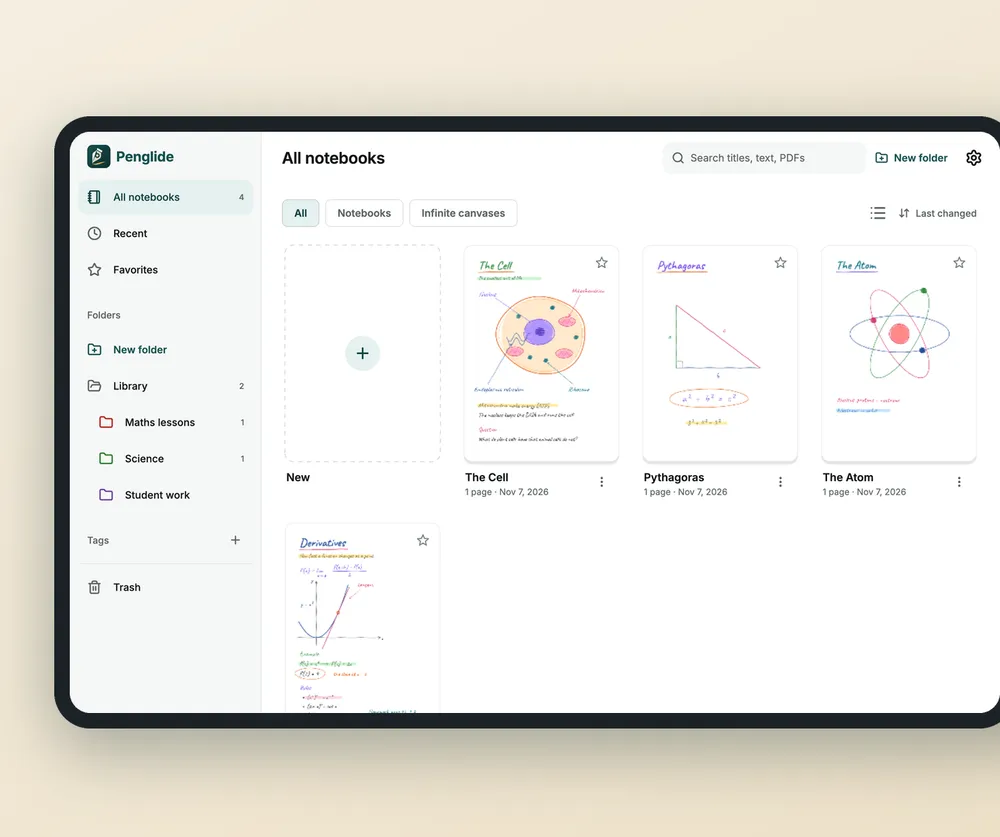
A look inside
Sample notes on illustrated screens.
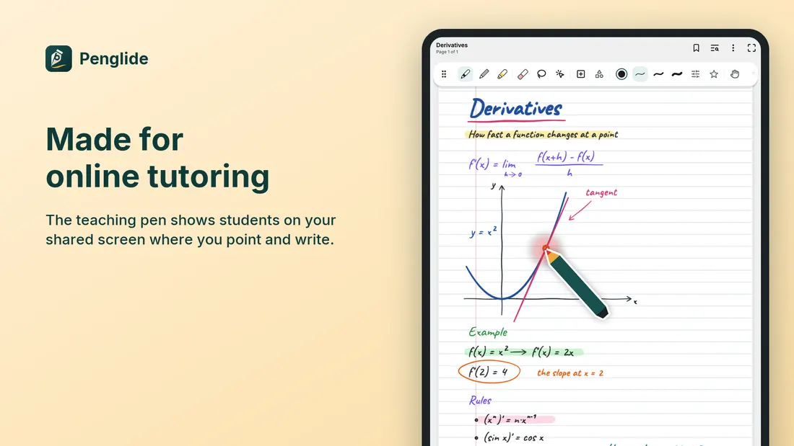
Made for online tutoring The teaching pen shows students where you point and write. 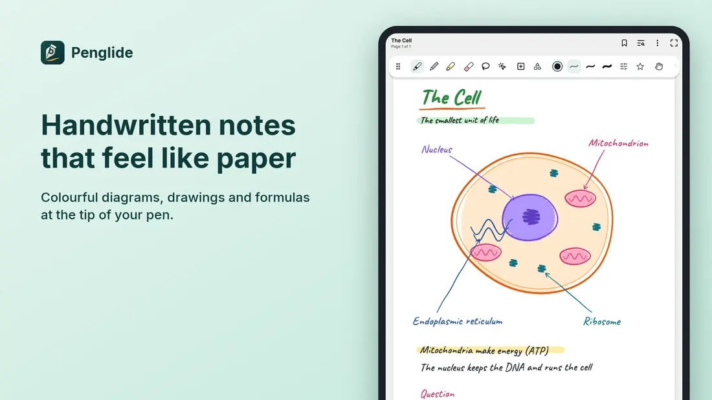
Handwritten notes that feel like paper Colourful diagrams, drawings and formulas. 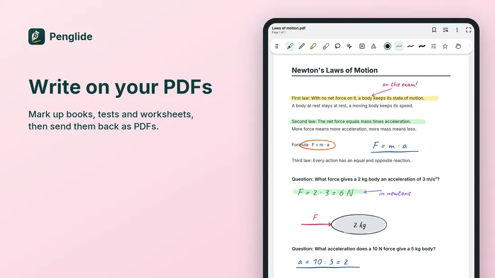
Write on your PDFs Mark up books, tests and worksheets. 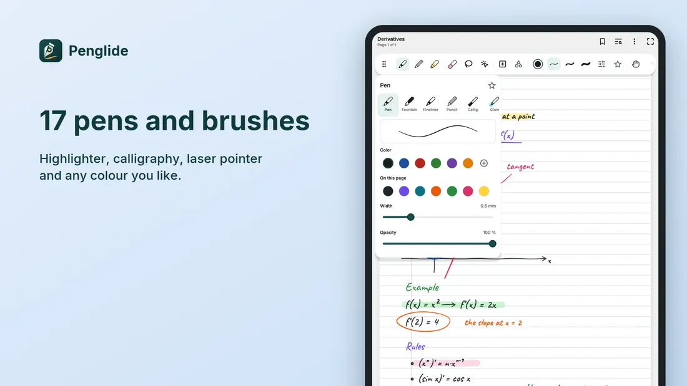
17 pens and brushes Highlighter, calligraphy, laser pointer and any colour. 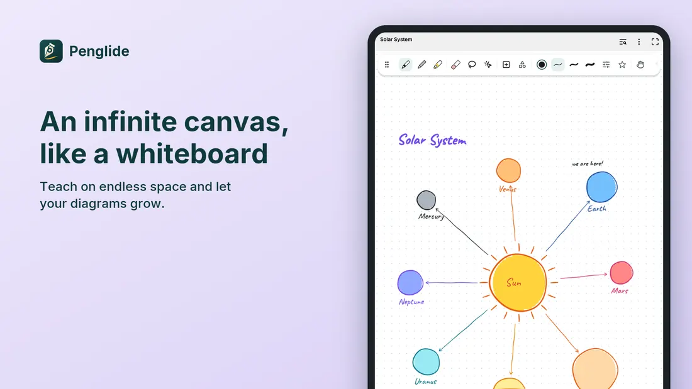
An infinite canvas, like a whiteboard Teach on endless space. 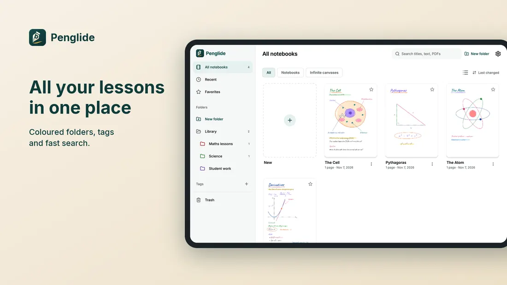
All your lessons in one place Coloured folders, tags and fast search. 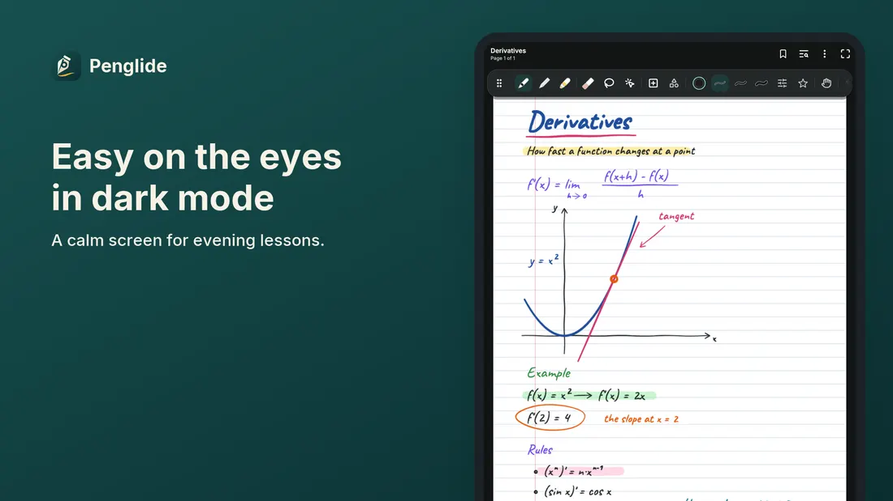
Easy on the eyes in dark mode A calm screen for evening lessons.
Your notes stay yours
No account needed and it works offline. We have no servers, so your notes never reach us.
- No accountOpen the app and write. Nothing to sign up for.
- No ads, no trackingNo advertising, no analytics.
- No serversWe have no servers and your notes never reach us.
- On your deviceNotebooks live in the app's private storage on your device.
- Encrypted and lockedEncrypted notebooks and locked notes.
- Copies you controlAutomatic copies to a folder you choose, if you want them.
Questions
Which devices does it run on?
Penglide is designed for tablets and also runs on phones. It is available for Android and iOS.
Do I need a stylus?
You can write with a finger or a stylus. Active styluses such as the S Pen give pressure-sensitive writing. The teaching pen needs an active stylus that the screen can sense before it touches.
Do I need an account or internet?
No. Penglide needs no account and works offline.
Does search find my handwriting?
No. Search finds titles, typed text and PDF content, not what is written by hand.
Where are my notes stored?
On your device. If you choose a library folder in Settings, copies are also written there. See the privacy policy for the details.
Can I send notes to students?
Yes. Export a notebook as a PDF that keeps its text selectable, then share it from the system share sheet.
Prepare your first lesson
For private tutors, students and anyone who takes handwritten notes on a tablet.